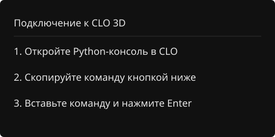

Подключи ChatGPT,
чтобы мы могли общаться

Скопируй команду
в консоль CLO, и начнём.
Чат
Профиль
К последнему сообщению
Твоя идея или уточнение
Опишите идею, а я помогу превратить её в лекала.
Добавить референс
Добавить
Отправить
Закрыть
Отмена
Сохранить